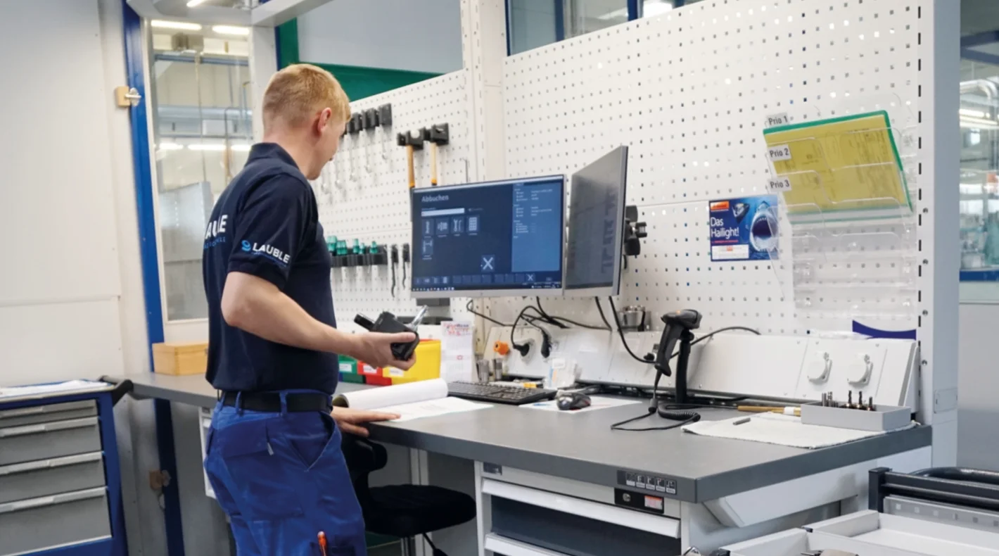
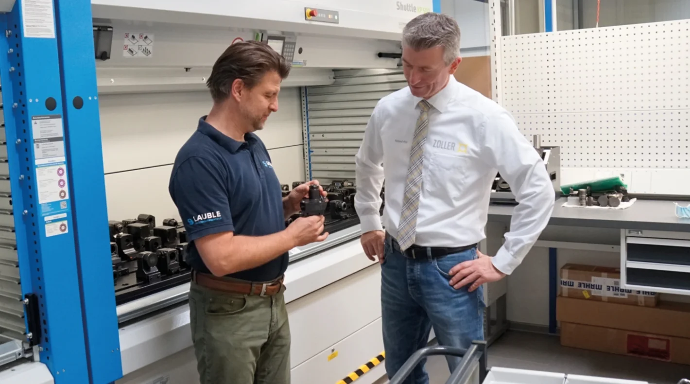
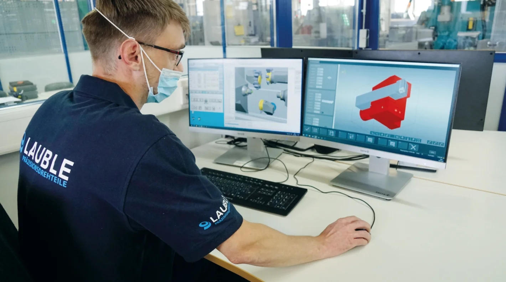

Präzision in Bestzeit
Das von zwei Generationen aus der Gründerfamilie geführte Unternehmen Lauble aus Dunningen im Landkreis Rottweil gehört zu diesen regional prägenden Firmen und vertritt diese Tradition in besonders überzeugender Weise. Hier werden durch kontinuierliche Überprüfung der Wirtschaftlichkeit und neuer technischer Möglichkeiten immer wieder Verbesserungspotenziale erkannt und mit Hilfe der richtigen Werkzeuge auch erschlossen.
„Präzision in Bestzeit“ hat sich Lauble auf die Fahnen geschrieben, auf der Website mit Beteiligung eigener Mitarbeiter als Boxenstopp-Team in Szene gesetzt. Dieses Team nimmt konsequent Rüst- und Nebenzeiten in Angriff, um die Produktivität und Lieferzeiten zu optimieren. Seit über 15 Jahren ist ZOLLER Partner für mehr Effizienz bei Lauble und hat nach der erfolgreichen Einführung der Werkzeugeinstellung in ZOLLER-eigener horizontaler Lage vor etlichen Jahren nun auch die Digitalisierung des Werkzeugmanagements begleitet. Erhebliche Einsparungen, Prozessverbesserungen und Arbeitserleichterungen wurden gemeinsam ermöglicht.
Das fertige Teil aus einer Hand
Lauble hat eine typische Geschichte für die Industrie der Region. Gegründet 1965 als Drehbetrieb in der heimischen Garage entwickelten drei Generationen die Firma zu einem Technologieunternehmen mit 50 Mitarbeitern und einer hochmodernen Fertigung mit 31 Maschinen auf insgesamt über 3.000 Quadratmetern. Auf modernen Kurzund Langdrehautomaten werden Teile in Losgrößen von meist 500-100.000 Stück für verschiedene, anspruchsvolle Anwendungen hergestellt. Mit der ganzen Erfahrung und dem Fachwissen eines Drehspezialisten entstehen hochpräzise, komplexe Teile aus Edelstahl, Aluminium, Stahl, Messing und auch Kunststoff für die Antriebstechnik, den Maschinenbau, die Medizintechnik und die Elektroindustrie. Lauble bietet dabei das fertige Teil aus einer Hand, komplett inklusive Fertigbearbeitung, Veredelung und Markierung im eigenen Haus.

Großes Einspar- und Optimierungspotenzial
Dass im professionellen Einstellen und Messen großes Einspar- und Optimierungspotenzial steckt, wusste Geschäftsführer Sascha Auber als erfahrener Fertigungsexperte intuitiv. Bei seiner Technikerarbeit im Jahr 2004 ging er diesem Potenzial nach und konnte die These mit harten Fakten bestätigen. Voreingestellte Werkzeuge im allgemeinen und speziell bei Lauble auf den etlichen Index Maschinen der ABC und C-Baureihe haben besonders signifikante Effekte auf Rüstzeiten und Maschinenverfügbarkeit. Somit war klar, dass ein professionelles Einstellgerät in der modernen Fertigung bei Lauble nicht fehlen durfte. Die Entscheidung fiel auf ein »hyperion« Einstell- und Messgerät von ZOLLER.
Für einen Drehteilehersteller ist das Gerät durch die horizontale Einspannsituation und die vielfältigen, auf die Drehbearbeitung zugeschnittenen Möglichkeiten, die ideale Wahl. ZOLLER ist der einzige Anbieter am Markt, der horizontale Werkzeug-Einstellgeräte anbietet und hat die Technologie stetig weiterentwickelt. Mit den Möglichkeiten zum exakten Einstellen der Spitzenhöhe oder der optionalen zusätzlichen Y-Achse zum Vermessen von Werkzeugen auf Mehrfachhaltern oder außermittigen Werkzeugen sowie von Spezialadaptern der Drehmaschinenhersteller bietet ZOLLER hier Funktionen, die aus dem Alltag der Drehteilehersteller abgeleitet wurden und besonders nützlich und zeitsparend sind.
Bei Lauble standen initial die konkreten Einsparungen durch das Auslagern des Werkzeugeinstellens im Blickpunkt. Und die konnten sich sehen lassen: mit einer Senkung der Rüstzeiten um rund 40 % hatten sich die Kosten für das Einstellgerät in weniger als einem halben Jahr amortisiert und bringen nun laufend signifikante Einsparungen. Diese ergeben sich daraus, dass die Maschine weit mehr Zeit unter Span ist. Beim Wechseln von nicht voreingestellten Komplettwerkzeugen, also Werkzeug und Halter, braucht die Maschine viel Zeit, um die Position des Werkzeugs manuell durch „ankratzen“ zu finden. Dabei wird das Werkzeug an das Werkstück herangefahren. Werden die Werkzeuge im Vorfeld eingestellt kann die Maschine nach dem Werkzeugwechsel viel schneller wieder in den Span. Unter dem Strich benötigt man so an der Maschine weniger Zeit zur Fertigung des gleichen Teils und kann so natürlich günstiger und schneller produzieren.
Wir haben mit ZOLLER Schritt für Schritt mit wachsendem Effekt mehr Effizienz in unsere Fertigung gebracht, ohne den laufenden Betrieb einschränken zu müssen.
Geschäftsführer, Lauble GmbH
Mit Leichtigkeit einstellen
Dass das »hpyerion« nicht nur eine Investition zur Senkung der Nebenzeiten war, zeigte sich recht schnell. Angesteckt von der Leichtigkeit, mit der Sascha Auber nun selbst Werkzeuge auf dem Einstellgerät vermass, fiel auch bald die Zurückhaltung der Mitarbeiter, die bisher auf das altbewährte „ankratzen“ geschworen hatten. Die Umstellung fiel auch dadurch leicht, dass die Werkzeuge in gewohnter horizontaler Lage vermessen werden. So war die Akzeptanz in kurzer Zeit groß und der Arbeitsalltag wurde für alle Beteiligten leichter. Heute scheint es unvorstellbar, die komplexen Rüstvorgänge ohne externe Vermessung durchzuführen.
Weitere Potenziale im Werkzeugmanagement
Das war genau die Art von Optimierung, die einige Jahre später das Team Boxenstopp suchte. Es lag nahe, im Rahmen dieser 2018 gestarteten Initiative nach weiteren Potenzialen im Werkzeugmanagement zu forschen. Welche Möglichkeiten gäbe es, die unzähligen Werkzeugkomponenten so zu erfassen und zu lagern, dass Suchzeiten praktisch vermieden werden und der Bestand immer ersichtlich wäre? Was wäre, wenn man die gemessenen Werkzeugdaten direkt und ohne manuellen Vorgang vom Einstellgerät an die Maschine übertragen könnte? Und wie könnte man die Werkzeugdaten am sinnvollsten für die virtuelle Maschine VirtualLine von Index nutzbar machen, die beim Programmieren, Simulieren und Optimieren hilft?
Diesen Fragestellungen ging Florian Kreuzberger nach, der als Assistent der Geschäftsleitung einen guten Überblick über die kaufmännischen Eckdaten des Unternehmens und entsprechende Ansatzpunkte für Optimierungen hat. Wenn man den studierten Juristen allerdings heutzutage beim Werkzeugeinstellen oder am Toolmanagement- Arbeitsplatz erlebt, wirkt er wie ein erfahrener Profi im Werkzeugraum.
Ausgangspunkt für die Überlegungen waren die offensichtlichen Verbesserungspotenziale im Werkzeugraum und beim Rüsten. „Natürlich haben wir unterschiedliche Losgrößen und die folgende Beispielrechnung ist eher konservativ: Angenommen wir rüsten 50 Werkzeuge am Tag, bestehend aus 125 Einzelkomponenten – selbst wenn man pro Komplettwerkzeug, inklusive aller Komponenten, nur 90 Sekunden sucht, kommt man auf eine reine Suchzeit von 75 Minuten pro Tag. Und das ist schon sehr optimistisch, da unser Werkzeugraum zwar ordentlich, aber nicht konsequent genug organisiert war“, so Kreuzberger.
Die Planung war relativ schnell aufgesetzt: Für die Werkzeugaufbewahrung sollten elektronische Schränke angeschafft werden, Werkzeuglisten sollten standardisiert und die Werkzeugbereitstellung von einem zentralen Verantwortlichen übernommen werden, statt bisher von jedem einzelnen Einrichter. Verknüpft sollte das Ganze durch eine professionelle Werkzeugmanagement- Software werden.

ZOLLER TMS Tool Management Solutions
Hierbei wurde man bei ZOLLER fündig. Mit dem SILVER Paket der TMS Tool Management Solutions erhielt Lauble alle Möglichkeiten, um eine gut organisierte, zeitgemäße Werkzeug- und Lagerverwaltung aufzusetzen. Vorbereitete Schnittstellen für den geplanten Lagerlift der Firma Kardex, die bedienerfreundliche ZOLLER Lagerortverwaltung, eine zentrale Pflege der Werkzeugdatensätze, Komponenten und Sachmerkmale gemäß DIN 4000, die Verwaltung von Einrichteblättern und der Datenimport an den Maschinen standen damit zur Verfügung. Damit auch der digitale Zwilling der Index Maschinen mit gemessenen 3D-Werkzeugdaten in der Software perfekt genutzt werden konnte, entwickelte ZOLLER im Rahmen des Projekts die Schnittstelle zur Software.
Bei der Schaffung der Grundlagen für diesen bedeutenden Schritt in der Fertigung von Lauble unterstützte ZOLLER mit den passenden Schulungen und Lösungsansätzen. Kreuzberger: „Vor allem die Werkzeugdaten- Anlage bereitete uns anfangs Kopfzerbrechen. Zwar konnten uns unsere Werkzeuglieferanten alle Daten bereitstellen, aber die Arbeit, alle Komponenten im System anzulegen, und das auch noch in 3D erschien uns als Mammutaufgabe. Während Fräsbetriebe mit weit weniger Komponenten und simpleren Konturen arbeiten können, müssen wir Dreher komplexe Daten anlegen.
Zuerst hatten wir den Eindruck, die Software von ZOLLER sei sehr auf rotierende Werkzeuge ausgelegt und dass wir immens viel Zeit mit der Datenanlage verbringen müssten.“ Dies konnte aber in Zusammenarbeit mit ZOLLER schnell entschärft werden: „Die Datenanlage stellt ein Stück weit immer Aufräumarbeit und Systematisierung dar, die sich aber zigfach auszahlt,“ so Felix Kammer, der den Prozess bei Lauble ZOLLER-seitig begleitet. „Es gibt immer Besonderheiten, die man beachten muss, aber grundsätzlich erlaubt es unsere Software, jegliche Werkzeuge, Komponenten und Sachmerkmale normgerecht zu definieren und so einen reibungslosen Austausch mit Fremdsystemen sicherzustellen.“
Dies bedarf lediglich eines Trainings, das den Verantwortlichen bei Lauble die nötige Kenntnis, Sicherheit und Geschwindigkeit verschaffte. „Wir dachten, wir würden an jedem Werkzeug mindestens einen halben Tag sitzen, haben aber in der Schulung schnell gelernt, wie man die DIN 4000 Struktur im ZOLLER-TMS mit den Daten der Werkzeughersteller befüllt.“ Damit war es eine reine Frage der Umsetzung. Die Machbarkeit und Effizienz waren gegeben.
Schritt für Schritt zu mehr Effizienz
Sascha Auber und Florian Kreuzberger wollen auf dem Erreichten weiter aufbauen: „Wir haben mit ZOLLER Schritt für Schritt mit wachsendem Effekt mehr Effizienz in unsere Fertigung gebracht, ohne den laufenden Betrieb einschränken zu müssen. Allein das Arbeiten in einem perfekt organisierten Werkzeugraum und das zielgerichtete Optimieren mit den virtuellen Werkzeugen machen unsere Vorwärts-Strategie greifbar, für Mitarbeiter und Kunden“, so Sascha Auber.
Florian Kreuzberger ergänzt: „Die Einsparungen an den Rüstzeiten, sowohl durch die schnellere Auffindbarkeit und direkt an der Maschine durch die externe Werkzeugvermessung, sind beeindruckend. Und wir erfahren durch den intensiven Austausch mit ZOLLER immer wieder von neuen Möglichkeiten zur Optimierung, die wir sicher nicht verpassen wollen.“ Derzeit stehen Automationslösungen der Firma ZOLLER für den Werkzeugsvorbereitungsprozess im Raum, die auf der bestehenden Basis schnell und einfach zu implementieren sind.